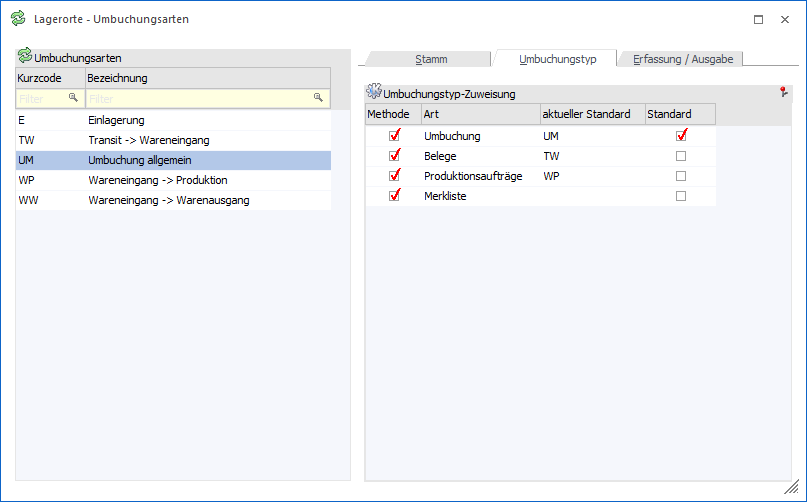
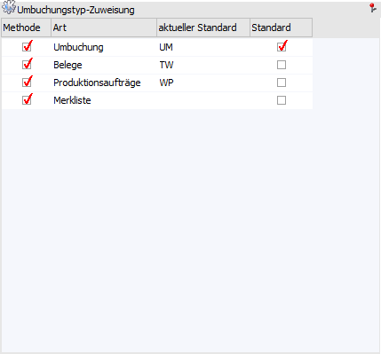

In diesem Register kann definiert werden, ob und wo die Umbuchungsarten in der "Lagerorte - Umbuchung" verwendet werden sollen.

Folgende Einstellungen stehen in diesem Register zur Verfügung:
Tabelle "Umbuchungstyp-Zuweisung"

In der Tabelle werden die 4 Umbuchungsmethoden der "Lagerorte - Umbuchung" aufgeführt, wobei es in der Umbuchung pro Methode ein eigenes Register gibt. Pro Umbuchungsart kann so definiert werden, bei welcher Methode die Umbuchungsart zur Verfügung stehen soll und ob es einen Standard-Umbuchungsart gibt.
Ø Methode
Durch Aktivierung dieser Checkbox wird die Umbuchungsart bei der jeweiligen Methode aufgeführt und kann somit beim Umbuchen genutzt werden.
Ø Art
In dieser Spalte wird die Umbuchungsmethode angezeigt.
Ø aktueller Standard
Hier wird die aktuelle Standard-Umbuchungsart der Umbuchungsmethode angezeigt.
Ø Standard
Mit Hilfe dieser Option kann die aktuelle Umbuchungsart als Standard definiert werden, d.h. diese Umbuchungsart wird bei der Methode automatisch vorgeschlagen.
Hinweis
Wurde bereits eine andere Umbuchungsart als Standard definiert, so wird durch das Setzen der Option die Standardzuweisung bei der bisherigen Umbuchungsart entfernt.
Tabellenbuttons

Ø Ausgabe Excel
Durch Anwahl des Buttons "Ausgabe Excel" wird der Inhalt der Tabelle an Microsoft Excel übergeben.
Ø Tabelleneinstellungen speichern
Die Spalten einer Tabelle können grundsätzlich an beliebige Positionen verschoben, bzw. in der Breite entsprechend angepasst werden. Durch Anwahl des Buttons "Tabelleneinstellungen speichern" werden die Einstellungen benutzerspezifisch gespeichert und bei dem nächsten Aufruf des Programmpunktes wieder vorgeschlagen.
Ø Gesamteinstellungen speichern…
Im Gegensatz zu "Tabelleneinstellungen speichern" können mit "Gesamteinstellungen speichern" mehrere Tabellenaufbauten gespeichert und nach Wunsch geladen werden. Zusätzlich werden Sonderfunktionen der Tabelle (z.B. "Spalte gruppieren") ebenfalls bei der Speicherung bedacht.